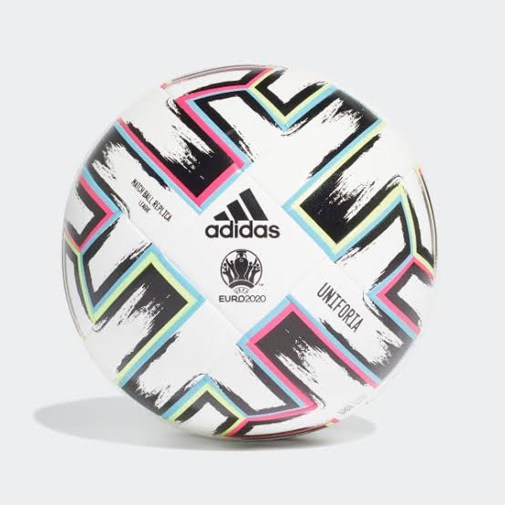

Two weeks before the start of the Eurocup
It will be played from June 11 to July 11
EURO 2021

Official Ball
This is the tournament ball
EURO 2021
12 Hosts
The first that 12 countries are hosts
HOSTS
24 Participants
Old Countries, New Countries
TEAMS6 Groups
Every match will be attractive
GROUPS